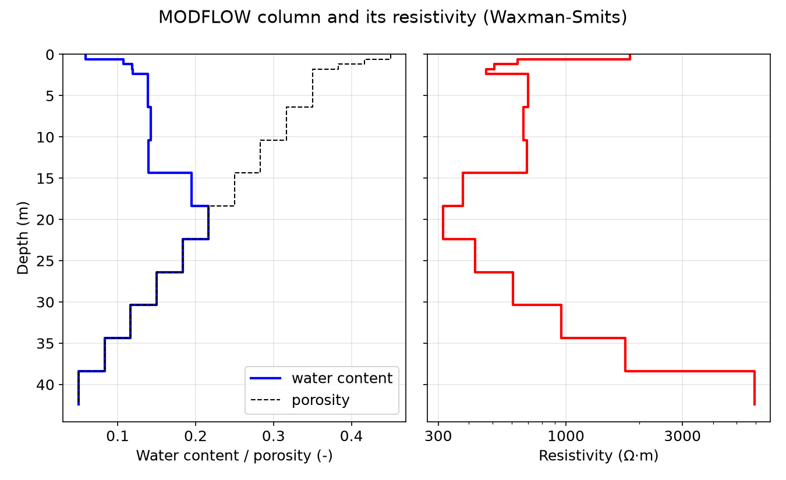
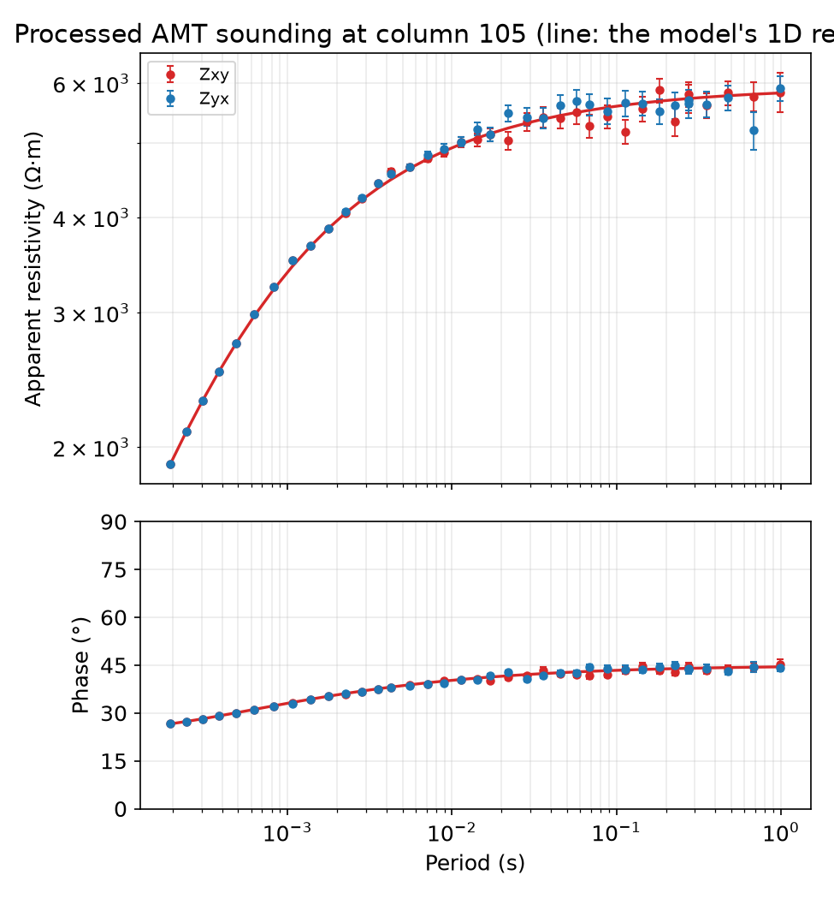
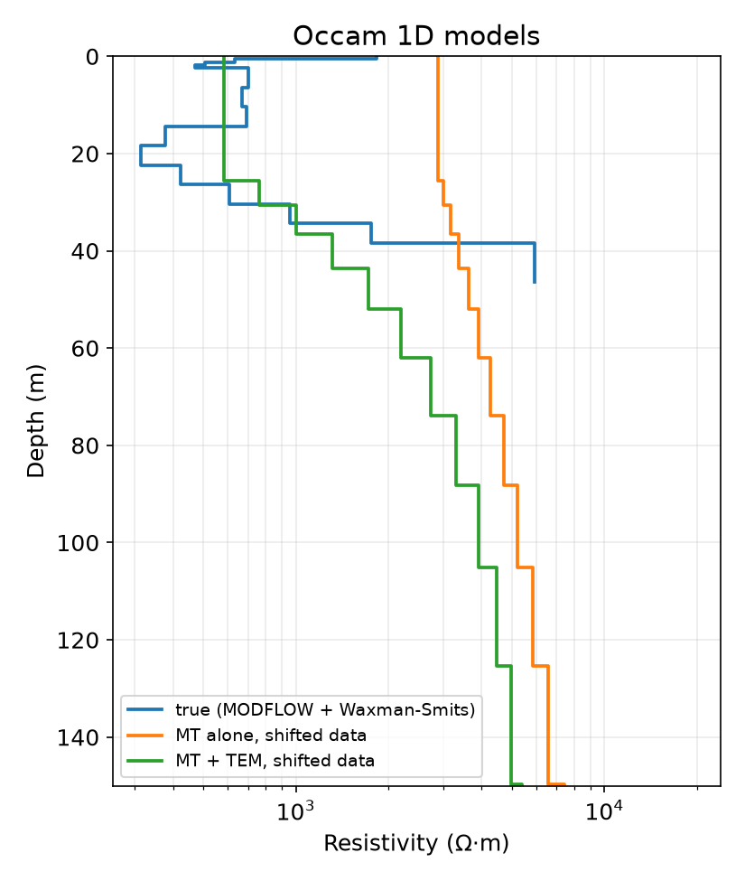
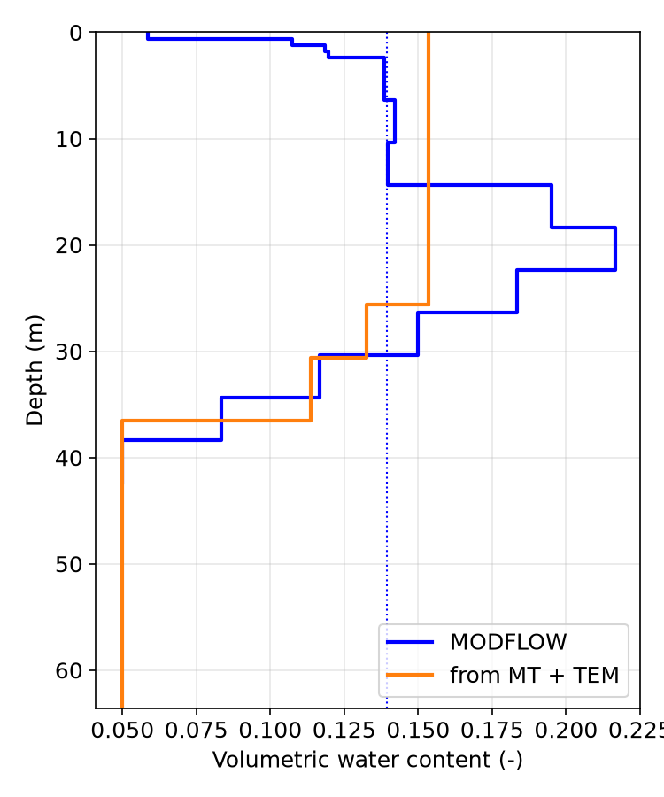
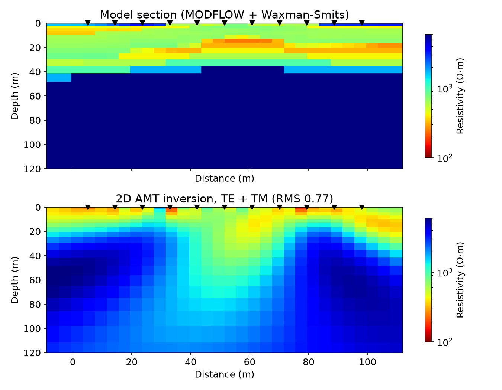
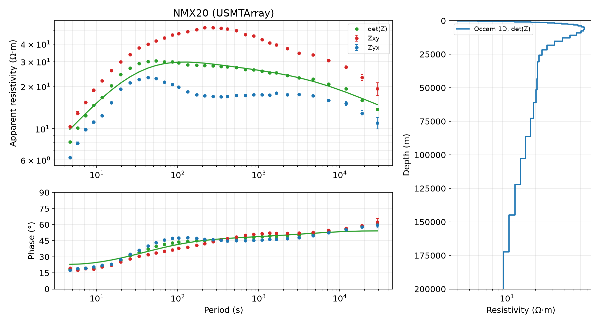
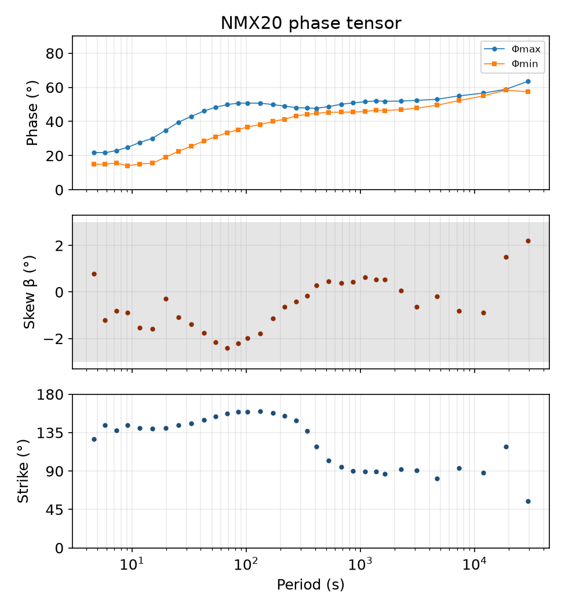

Note
Go to the end to download the full example code.
Ex. MT Workflow: From a Hydrological Model to Magnetotelluric Soundings and Back#
This example runs the package’s magnetotelluric (MT) chain on the MODFLOW model
shipped in examples/data, and then on a field station.
Loading MODFLOW water content and porosity, and turning them into resistivity with the Waxman-Smits model the ERT example uses
Modelling the audio-magnetotelluric (AMT) impedance of one model column
Recording it as time series and estimating the impedance back with the robust processing (
process_mt), then writing and reading an EDI fileStatic shift: why MT alone cannot fix it, and how a TEM sounding at the same site does, in a joint Occam inversion
Turning the inverted resistivity back into water content
A 2D AMT profile along the model, modelled and inverted with SimPEG
A field station, USMTArray NMX20: sounding, Occam model and phase tensor
Steps 4 and 6 need SimPEG (for the TDEM forward operator and the 2D simulations), which the TDEM examples need as well.
## Step 1: Imports and the hydrological model
import os
import sys
import warnings
import matplotlib.pyplot as plt
import numpy as np
from matplotlib.ticker import FormatStrFormatter, NullFormatter
try:
current_dir = os.path.dirname(os.path.abspath(__file__))
except NameError:
current_dir = os.getcwd()
parent_dir = os.path.dirname(current_dir)
if parent_dir not in sys.path:
sys.path.insert(0, parent_dir)
from PyHydroGeophysX.data_processing import mt
from PyHydroGeophysX.inversion.em1d import DEFAULT_INVERSION, build_sounding_block
from PyHydroGeophysX.petrophysics.resistivity_models import WS_Model
from PyHydroGeophysX.visualization import (
plot_mt_dimensionality,
plot_mt_model_1d,
plot_mt_section,
plot_mt_sounding,
)
from PyHydroGeophysX.visualization.axis_units import set_length_axis
warnings.filterwarnings("ignore", category=RuntimeWarning)
plt.rcParams.update({"font.size": 12})
output_dir = os.path.join(current_dir, "results", "mt_workflow")
os.makedirs(output_dir, exist_ok=True)
data_dir = os.path.join(current_dir, "data")
idomain = np.loadtxt(os.path.join(data_dir, "id.txt"))
top = np.loadtxt(os.path.join(data_dir, "top.txt"))
bot = np.load(os.path.join(data_dir, "bot.npy"))
porosity_3d = np.load(os.path.join(data_dir, "Porosity.npy"))
water_content = np.load(os.path.join(data_dir, "Watercontent.npy"))[5] # time step 5, as the ERT example
## Step 2: Water content to resistivity
The model’s 14 layers are regolith (layers 0-3), fractured bedrock (4-12) and fresh bedrock (13). Each group gets the Waxman-Smits parameters of the ERT workflow example, and fresh, saturated bedrock continues below the model.
group = np.r_[np.zeros(4), np.ones(9), [2]].astype(int)
sigma_w = np.array([1 / 20, 1 / 20, 1 / 20]) # pore water conductivity (S/m)
m_exp = np.array([1.2, 1.8, 1.9]) # cementation exponent
n_exp = np.array([2.2, 1.8, 2.5]) # saturation exponent
sigma_s = np.array([1 / 100, 0.0, 0.0]) # surface conductivity (S/m)
def column_model(row, col):
"""Layer thicknesses, resistivities, porosities and water contents of one column."""
edges = np.r_[top[row, col], bot[:, row, col]]
thickness = -np.diff(edges)
phi = porosity_3d[:, row, col]
theta = water_content[:, row, col]
rho = np.array([float(WS_Model(theta[k] / phi[k], phi[k], sigma_w[group[k]], m_exp[group[k]],
n_exp[group[k]], sigma_s[group[k]])) for k in range(phi.size)])
bedrock = float(WS_Model(1.0, phi[-1], sigma_w[2], m_exp[2], n_exp[2], sigma_s[2]))
return thickness, np.r_[rho, bedrock], phi, theta
row, col = 120, 105
thickness_true, rho_true, phi_col, theta_col = column_model(row, col)
depth_edges = np.r_[0.0, np.cumsum(thickness_true)]
depth_steps = np.column_stack([depth_edges[:-1], depth_edges[1:]]).ravel() # each layer's top and bottom
print(f"Column ({row}, {col}): {thickness_true.sum():.1f} m of aquifer over bedrock")
print("Resistivity (ohm m):", np.round(rho_true, 0))
fig, axes = plt.subplots(1, 2, figsize=(9, 5.5), sharey=True)
axes[0].plot(np.repeat(theta_col, 2), depth_steps, "b-", lw=2, label="water content")
axes[0].plot(np.repeat(phi_col, 2), depth_steps, "k--", lw=1, label="porosity")
axes[1].plot(np.repeat(rho_true[:thickness_true.size], 2), depth_steps, "r-", lw=2)
axes[0].set_xlabel("Water content / porosity (-)")
axes[0].legend(loc="lower right")
axes[1].set_xscale("log")
axes[1].set_xticks([300, 1000, 3000])
axes[1].xaxis.set_major_formatter(FormatStrFormatter("%g"))
axes[1].xaxis.set_minor_formatter(NullFormatter())
axes[1].set_xlabel("Resistivity (Ω·m)")
axes[0].set_ylim(depth_edges[-1] * 1.05, 0)
set_length_axis(axes[0], "y", "Depth")
for ax in axes:
ax.grid(True, alpha=0.3)
fig.suptitle("MODFLOW column and its resistivity (Waxman-Smits)")
fig.tight_layout()
fig.savefig(os.path.join(output_dir, "column_model.png"), dpi=150)
plt.show()
The MODFLOW column#
Water content and porosity of the model column (left) and the resistivity the Waxman-Smits model gives them (right).


## Step 3: AMT time series, robust processing and an EDI file
Natural magnetic fields are random; the electric field they induce at the surface is the impedance times the magnetic field, frequency by frequency. 44 s of a 24 kS/s AMT recording are made that way from the column’s 1D impedance, with 5% noise on E, and processed with the package’s robust estimator: cascade decimation, windowed Fourier coefficients, Huber then redescending regression, EMTF’s band set.
fs, n_samples = 24000.0, 2 ** 20
rng = np.random.default_rng(7)
def natural_field():
walk = np.cumsum(rng.standard_normal(n_samples)) * 0.01 + rng.standard_normal(n_samples)
return walk - walk.mean()
hx, hy = natural_field(), natural_field()
fft_freq = np.fft.rfftfreq(n_samples, 1.0 / fs)
z_field = np.zeros(fft_freq.size, dtype=complex)
z_field[1:] = mt.impedance_1d(rho_true, thickness_true, fft_freq[1:]) / mt.FIELD_TO_OHM # (mV/km)/nT
ex = np.fft.irfft(z_field * np.fft.rfft(hy), n=n_samples)
ey = np.fft.irfft(-z_field * np.fft.rfft(hx), n=n_samples)
ex += 0.05 * ex.std() * rng.standard_normal(n_samples)
ey += 0.05 * ey.std() * rng.standard_normal(n_samples)
run = mt.TimeSeriesRun(
[mt.Channel("ex", ex, "mV/km"), mt.Channel("ey", ey, "mV/km"),
mt.Channel("hx", hx, "nT"), mt.Channel("hy", hy, "nT")],
sample_rate=fs, start="2024-06-01T12:00:00", station=f"MF{col}")
tf = mt.process_mt(run)
z_true = mt.impedance_1d(rho_true, thickness_true, tf.frequency)
misfit = np.abs(tf.z[:, 0, 1] - z_true) / np.abs(z_true)
print(f"{tf.n_frequencies} bands, {tf.frequency.min():.2f}-{tf.frequency.max():.0f} Hz; "
f"|Z - Z_true| / |Z_true|: median {np.median(misfit):.4f}")
edi_path = os.path.join(output_dir, f"MF{col}.edi")
mt.write_edi(tf, edi_path)
tf = mt.read_transfer_function(edi_path)
print("EDI written and read back:", tf.summary()["n_frequencies"], "frequencies")
rho_model, phase_model = mt.apparent_resistivity_1d(rho_true, thickness_true, tf.frequency)
fig = plot_mt_sounding(tf, predicted={"xy": (tf.period, rho_model, phase_model)},
title=f"Processed AMT sounding at column {col} (line: the model's 1D response)")
fig.savefig(os.path.join(output_dir, "processed_sounding.png"), dpi=150)
plt.show()
The processed sounding#
Apparent resistivity and phase estimated from the time series (points with their errors) against the column’s 1D response (line).


## Step 4: Static shift, and the TEM sounding that removes it
Small conductive or resistive bodies near an electrode multiply the apparent resistivity by a constant factor at every period. Here both modes are shifted up by 2.56. A shifted sounding has the same phases as one over a model whose resistivities are scaled and depths stretched, so MT alone cannot tell the shift from the ground: Occam’s inversion with a free shift per mode keeps it near its prior. A central-loop TEM sounding at the same site is not shifted; fitted jointly, it fixes the shift.
shifted = mt.apply_static_shift(tf, 1 / 2.56, 1 / 2.56)
mt_only = mt.occam1d(shifted, mode="both", static_shift=True, error_floor=0.03)
tem_times = np.logspace(-5.5, -3.0, 20)
tem_geometry = {"height": 0.0, "source_radius": 20.0}
truth_block = build_sounding_block(
{"times": tem_times, "response": np.ones_like(tem_times)}, tem_geometry,
{**DEFAULT_INVERSION, "n_layers": rho_true.size, "layer_thicknesses": thickness_true}, "TDEM")
tem_data = truth_block.forward(1.0 / rho_true) * (1 + 0.03 * rng.standard_normal(tem_times.size))
tem = {"data": {"times": tem_times, "response": tem_data}, "geometry": tem_geometry,
"inversion": {"rel_error": 0.03}}
joint = mt.occam1d(shifted, mode="both", static_shift=True, error_floor=0.03, tem=tem)
for label, result in (("MT alone", mt_only), ("MT + TEM", joint)):
shift = ", ".join(f"{k} {v:.2f}" for k, v in result.static_shift.items())
print(f"{label:9s} RMS {result.rms:.2f}; static shift {shift} (true 2.56)")
fig, ax = plt.subplots(figsize=(5.5, 6.5))
plot_mt_model_1d({"true (MODFLOW + Waxman-Smits)": (thickness_true, rho_true),
"MT alone, shifted data": mt_only, "MT + TEM, shifted data": joint},
ax=ax, max_depth=150.0)
ax.set_title("Occam 1D models")
fig.tight_layout()
fig.savefig(os.path.join(output_dir, "static_shift_models.png"), dpi=150)
plt.show()
Static shift#
The model MT alone recovers from shifted data is several times too resistive; with the TEM sounding the shift is found and the model is the true one, as smooth as Occam’s inversion makes it.


## Step 5: Back to water content
Each Occam layer is given the petrophysics of the hydrostratigraphic unit at
its depth and the porosity there; water_content_profile applies the
Waxman-Smits link in reverse. At these frequencies the skin depth is over
100 m, so MT and TEM see the aquifer as a whole: the comparison is with the
model’s water content averaged over the same depths.
centres = joint.depth + np.r_[joint.thickness, joint.thickness[-1]] / 2
unit = np.clip(np.searchsorted(depth_edges, centres) - 1, 0, phi_col.size - 1)
unit_group = group[unit]
phi_layers = phi_col[unit]
rhos = 1.0 / (sigma_w[unit_group] * phi_layers ** m_exp[unit_group])
sigma_sur = sigma_s[unit_group] * phi_layers ** m_exp[unit_group]
recovered = mt.water_content_profile(joint, rhos=rhos, n=n_exp[unit_group],
porosity=phi_layers, sigma_sur=sigma_sur)
in_aquifer = centres < depth_edges[-1]
weights = np.r_[joint.thickness, 0.0][in_aquifer]
mean_recovered = np.sum(recovered["water_content"][in_aquifer] * weights) / np.sum(weights)
mean_model = np.sum(theta_col * thickness_true) / thickness_true.sum()
print(f"Water content of the top {depth_edges[-1]:.0f} m: MODFLOW {mean_model:.3f}, "
f"from MT + TEM {mean_recovered:.3f}")
fig, ax = plt.subplots(figsize=(5, 6))
ax.plot(np.repeat(theta_col, 2), depth_steps, "b-", lw=2, label="MODFLOW")
joint_depth, _ = joint.depth_profile()
ax.plot(np.repeat(recovered["water_content"], 2), joint_depth, color="tab:orange", lw=2,
label="from MT + TEM")
ax.axvline(mean_model, color="b", ls=":", lw=1)
ax.set_ylim(depth_edges[-1] * 1.5, 0)
ax.set_xlabel("Volumetric water content (-)")
set_length_axis(ax, "y", "Depth")
ax.legend(loc="lower right")
ax.grid(True, alpha=0.3)
fig.tight_layout()
fig.savefig(os.path.join(output_dir, "water_content.png"), dpi=150)
plt.show()
Water content#
The model’s water content (blue) and the one read from the joint inversion (orange); the dotted line is the model’s depth average.


## Step 6: A 2D AMT profile along the model
Row 120 of the model gives a section about 100 m long. Eleven AMT sites along it are modelled with SimPEG’s 2D natural-source simulations (TE and TM) on a mesh fine enough for the aquifer, given 3% noise, and inverted for a smooth section.
line_cols = np.flatnonzero(idomain[row] > 0)
x_cols = (line_cols - line_cols[0]).astype(float) # the model grid is 1 m
columns = [column_model(row, c) for c in line_cols]
def section_resistivity(centers):
"""The model's resistivity at mesh-cell centres (x along the row, z up from the surface)."""
j = np.clip(np.round(centers[:, 0]), 0, x_cols[-1]).astype(int)
depth = -centers[:, 1]
out = np.empty(centers.shape[0])
for i, (thick, rho, _, _) in enumerate(columns):
here = j == i
layer = np.searchsorted(np.cumsum(thick), depth[here], side="right")
out[here] = rho[np.minimum(layer, rho.size - 1)]
return out
stations = np.linspace(5.0, x_cols[-1] - 5.0, 11)
frequencies = np.logspace(0, 3.7, 10)
profile = mt.build_profile_mesh(stations, frequencies, resistivity=600.0, core_cell=4.0, top_cell=2.0)
z_profile = mt.forward_profile(profile, section_resistivity, frequencies)
profile_tfs = []
for k in range(stations.size):
z = np.zeros((frequencies.size, 2, 2), dtype=complex)
errors = np.zeros((frequencies.size, 2, 2))
for (i, j), mode in (((0, 1), "te"), ((1, 0), "tm")):
noise = (rng.standard_normal(frequencies.size) + 1j * rng.standard_normal(frequencies.size)) / np.sqrt(2)
z[:, i, j] = z_profile[mode][:, k] * (1 + 0.03 * noise)
errors[:, i, j] = 0.03 * np.abs(z[:, i, j])
profile_tfs.append(mt.TransferFunction(frequency=frequencies, z=z, z_err=errors, station=f"P{k:02d}"))
section = mt.invert_profile(profile_tfs, stations, error_floor=0.03, profile=profile, max_iterations=12)
print(f"2D inversion: RMS {section.rms:.2f} after {len(section.history)} iterations")
import dataclasses
truth = dataclasses.replace(section, resistivity=section_resistivity(profile.ground_centers))
limits = (100.0, 6000.0)
fig, axes = plt.subplots(2, 1, figsize=(9, 7), sharex=True)
plot_mt_section(truth, ax=axes[0], max_depth=120.0, limits=limits, title="Model section (MODFLOW + Waxman-Smits)")
plot_mt_section(section, ax=axes[1], max_depth=120.0, limits=limits, title=f"2D AMT inversion, TE + TM (RMS {section.rms:.2f})")
fig.savefig(os.path.join(output_dir, "profile_sections.png"), dpi=150)
plt.show()
The 2D profile#
The model’s section (top) and the smooth section the TE and TM data give (bottom): the conductive, wetter aquifer over resistive bedrock.


## Step 7: A field station - USMTArray NMX20
examples/data/MT/NMX20.xml holds the transfer functions of a long-period
station in New Mexico in EMTF XML (CC BY 4.0; see
examples/data/MT/acknowledgement.txt). Its phase tensor shows how close
to 1D the ground is at each period, and Occam’s inversion of the
determinant gives a crustal resistivity profile.
nmx20 = mt.read_transfer_function(os.path.join(data_dir, "MT", "NMX20.xml"))
pt = mt.phase_tensor(nmx20)
print(f"NMX20: {nmx20.n_frequencies} periods, {nmx20.period.min():.1f}-{nmx20.period.max():.0f} s; "
f"phase-tensor skew |beta| median {np.median(np.abs(pt['beta'])):.1f} deg")
nmx20_model = mt.occam1d(nmx20, mode="det", error_floor=0.05)
print(f"Occam 1D on det(Z): RMS {nmx20_model.rms:.2f}")
fig = plt.figure(figsize=(12, 6.5))
grid = fig.add_gridspec(2, 3, height_ratios=[3, 2])
ax_rho, ax_phase = fig.add_subplot(grid[0, 0:2]), fig.add_subplot(grid[1, 0:2])
plot_mt_sounding(nmx20, components=("xy", "yx", "det"), axes=(ax_rho, ax_phase), title="NMX20 (USMTArray)",
predicted={"det": (1 / nmx20_model.sounding.frequency, 10 ** nmx20_model.predicted["log_rho_a"],
nmx20_model.predicted["phase"])})
ax_model = fig.add_subplot(grid[:, 2])
plot_mt_model_1d({"Occam 1D, det(Z)": nmx20_model}, ax=ax_model, max_depth=200e3)
fig.tight_layout()
fig.savefig(os.path.join(output_dir, "nmx20.png"), dpi=150)
plt.show()
fig = plot_mt_dimensionality(nmx20, title="NMX20 phase tensor")
fig.savefig(os.path.join(output_dir, "nmx20_phase_tensor.png"), dpi=150)
plt.show()
Field data#
The NMX20 sounding with the Occam model’s fit to det(Z), and that model.


Its phase tensor: the two principal phases, the skew and the strike against period. The skew stays within about 3 degrees, so a 1D or 2D reading of the station is justified; where the two phases part, the strike says along which direction the 2D structure runs, up to the 90-degree ambiguity.

